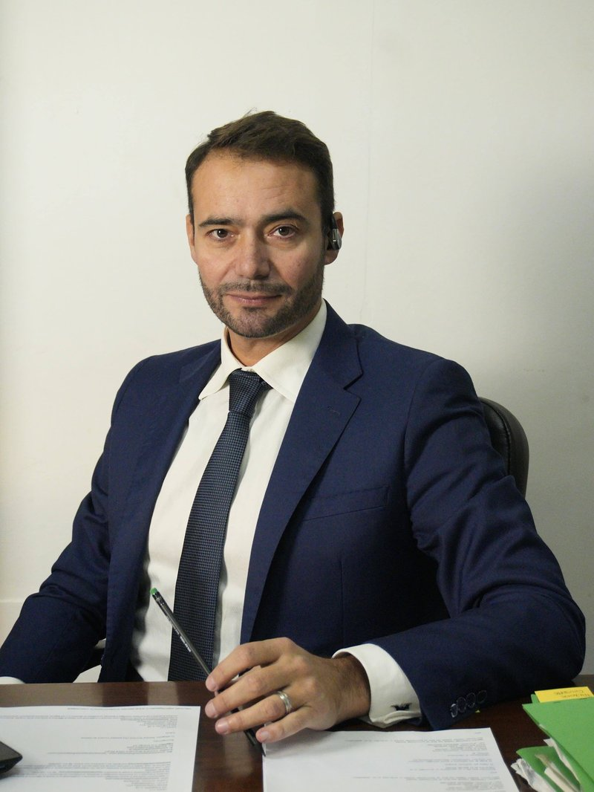

Il fondatore
Avv. Giuseppe Fussone
Patrocinante in Cassazione
Avvocato e fondatore dello Studio Legale Fussone, svolge attività di assistenza, consulenza e rappresentanza legale in ambito giudiziale e stragiudiziale.
- FormazioneGiurisprudenza, Università di Catania
- StudioFondato a San Cataldo nel 2010
- AbilitazioniCorte di Cassazione e Corte dei Conti
La storia
Un percorso tra diritto e impegno umano
Giuseppe Fussone non proviene da una famiglia di avvocati: il padre era assicuratore, la madre assistente contabile. È in questo contesto che nasce la sua scelta di studiare Giurisprudenza all'Università di Catania, dove si laurea nell'ottobre 2006. Durante gli anni universitari è stato rappresentante degli studenti, mantenendosi con lavori come cameriere e operaio.
Il suo primo obiettivo era diventare magistrato: supera l'esame per la Scuola Superiore Forense e svolge il tirocinio presso il Tribunale di Enna. La sua strada, però, lo porta verso l'avvocatura.
Per oltre sei anni si è dedicato al volontariato con la Croce Rossa, partecipando a missioni umanitarie, tra cui il sostegno ai profughi albanesi nella missione Arcobaleno. Ha inoltre maturato collaborazioni professionali con realtà nazionali e internazionali come Dolce & Gabbana, Hubbard, Enel, Sorgenia, Edison, Vodafone, Fastweb, Carrefour, Total Erg, Generali e Groupama, che lo hanno portato a lavorare in Kenya, Brasile, India, Egitto, Etiopia e diversi paesi europei, imparando tre lingue.
Nel 2010 lascia lo studio legale presso cui si era formato per aprire il proprio studio a San Cataldo, scegliendo di restare nel territorio siciliano. Da allora lo Studio Legale Fussone si è affermato nei principali settori del diritto civile, penale, amministrativo, di famiglia, del lavoro e non solo, e Giuseppe ha conseguito le abilitazioni per la difesa presso le corti superiori, tra cui la Corte di Cassazione e la Corte dei Conti.
Fin dall'apertura, lo studio è stato anche un luogo di formazione per giovani laureati e praticanti. L'impegno umanitario di Giuseppe, inoltre, non si è mai fermato: ha partecipato a iniziative in Africa, Brasile, Croazia, Uganda e Madagascar, contribuendo alla realizzazione di due orfanotrofi e una scuola per le comunità locali.
Hai una questione legale da affrontare?
Richiedi una prima valutazione della tua situazione: lo Studio ti risponderà con attenzione e chiarezza.